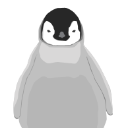
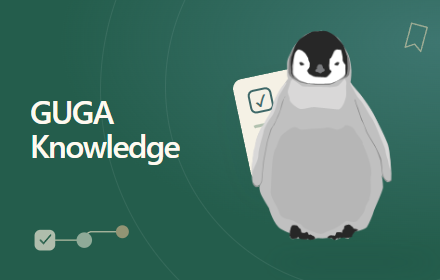
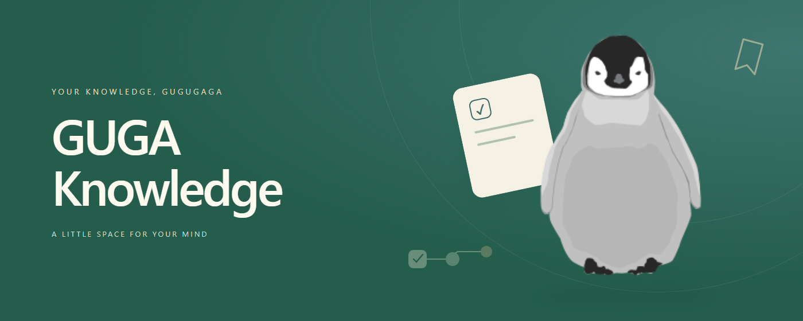
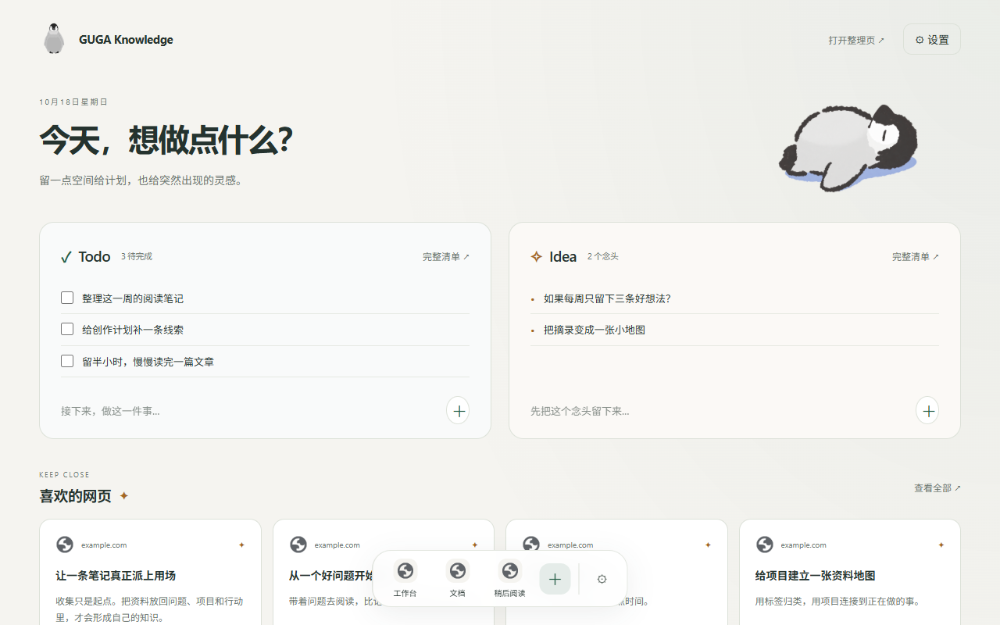
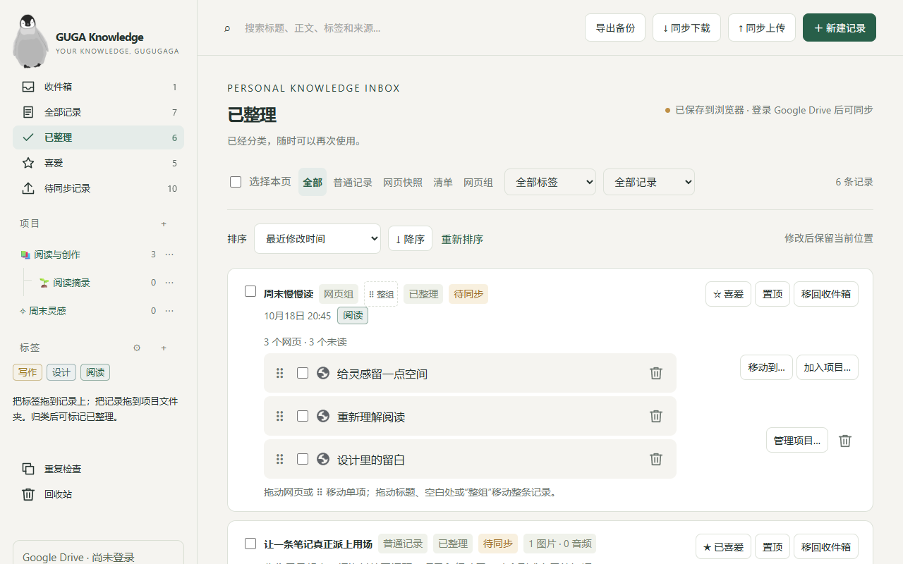
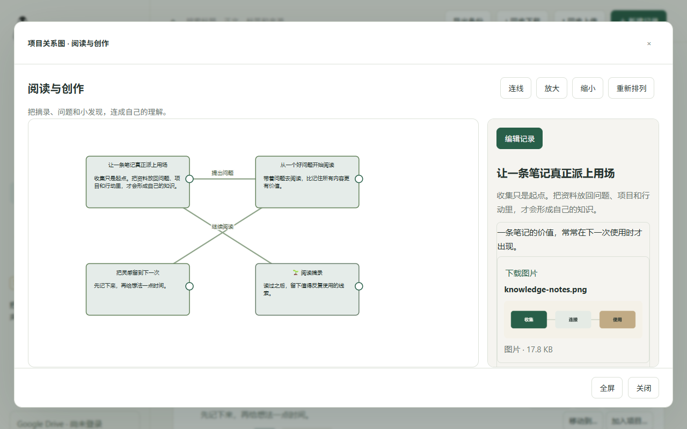
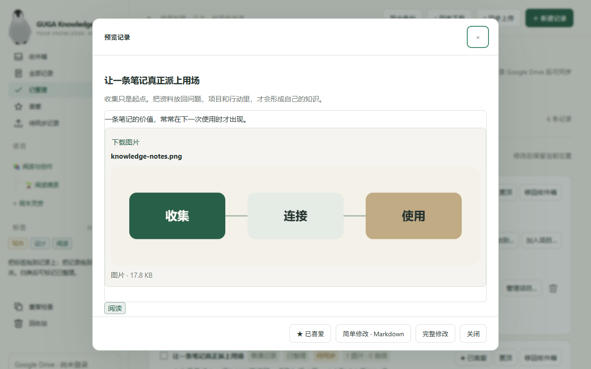
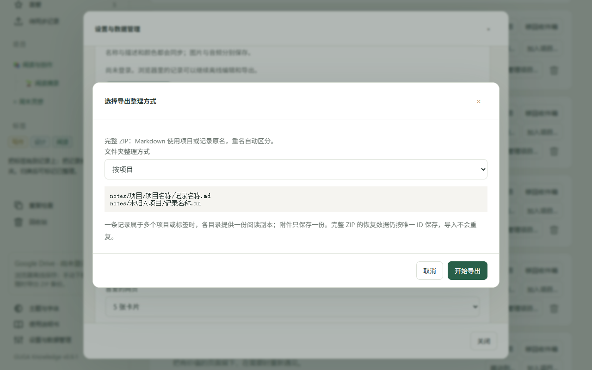

上线文案与图片 · v0.9.1 · 中文 / English / Français / 日本語


收集网页、笔记和灵感，用标签与项目离线整理。个人启动页、手动 Google Drive 同步与完整 ZIP 备份。
四种语言的完整介绍、各五张真实截图、通用宣传图、图标与可编辑源文件。






界面录制使用隔离的示例资料库。界面、图标与宣传图统一沿用最早的灰色企鹅。宣传图为通用素材，截图可按语言上传。